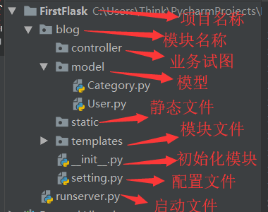
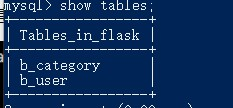

果然跟着python2的项目学习Flask有点让人烦躁- - ，除了今天蓝桥杯模拟赛，搞了一天才这么点进度。我去!
什么是MVC架构
完成后的目录结构是这样的：非常简单，一个static文件夹，一个templates文件夹，一个py文件。
以上的目录结构是flask初始时的结构，这个只能应对很小的项目，对于大型复杂的项目，我们需要引入包的管理，MVC架构设计。
- Model（模型）
是应用程序中用于处理应用程序数据逻辑的部分。通常模型对象负责在数据库中存取数据。 - View（视图）
是应用程序中处理数据显示的部分,通常视图是依据模型数据创建的。 - Controller（控制器）
是应用程序中处理用户交互的部分,通常控制器负责从视图读取数据，控制用户输入，并向模型发送数据。

目录结构重构，引入包管理
- 新建一个runserver.py文件，作为项目统一入口文件
- 新建blog2文件夹，把已存在的static,templates,app.py移到blog文件夹下，然后分别建controller、model包(右击blog2，选择python package)。把app.py改名为init.py，新建setting.py 文件。
- 最上层FirstFlask目录是项目名称，一个项目下可以包括多个模块，也就是应用，每个应用下有自己的配置文件，初始化文件，MVC架构。
- runserver.py：与应用模块平级，作为项目启动文件
- blog文件夹：
model: MVC中的M，负责在数据库中存取数据。
templates：MVC中的V，处理数据显示的部分。
controller: MVC中的C，控制器负责控制用户输入，并发送数据。
开发代码
__init__.py文件
1 | |
2 | |
3 | |
4 | |
5 | |
6 | |
7 | |
8 | from flask import Flask |
9 | |
10 | |
11 | app = Flask(__name__) |
runserver.py文件
1 | # _*_ coding: utf-8 _*_ |
2 | |
3 | from blog import app |
4 | |
5 | |
6 | def index(): |
7 | return 'Please login~' |
8 | |
9 | |
10 | if __name__ == '__main__': |
11 | app.run(debug=True) |
运行runserver.py文件就可以看到效果了
setting.py配置文件
添加配置数据库连接信息，如下：
1 | #!/usr/bin/env python3 |
2 | # _*_ coding: utf-8 _*__ * _ |
3 | # @Time : 2020/3/10 11:39 |
4 | # @Author: ChenZIDu |
5 | # @File : setting.py.py |
6 | |
7 | # 调试模式是否开启 |
8 | DEBUG = True |
9 | |
10 | # session 必须要设置key |
11 | SECRET_KEY = 'A0Zr98j/3yX R~XHH!jmN]LWX/,?RT' |
12 | |
13 | DIALECT = 'mysql' # 要用的什么数据库 |
14 | DRIVER = 'mysqlconnector' # 连接数据库驱动 官方驱动解决1366问题 |
15 | USERNAME = 'root' # 用户名 |
16 | PASSWORD ='root' # 密码 |
17 | HOST = 'localhost' # 服务器 |
18 | PORT ='3306' # 端口 |
19 | DATABASE = 'flask' # 数据库名 |
20 | |
21 | SQLALCHEMY_DATABASE_URI = "{}+{}://{}:{}@{}:{}/{}?charset=utf8".format(DIALECT, DRIVER, USERNAME, PASSWORD, HOST, PORT, DATABASE) |
22 | SQLALCHEMY_TRACK_MODIFICATIONS = False |
注意可能会有1366错误
Warning: (1366, "Incorrect string value: '\\xD6\\xD0\\xB9\\xFA\\xB1\\xEA...' for column 'VARIABLE_VALUE' at row 484") result = self._query(query)
错误要换成MySQL自己的驱动mysqlconnector,不过我代码已经换好了- -
ModuleNotFoundError: No module named ‘mysql’错误
要安装驱动`pip install mysql-connector`
__init__.py读取配置文件
因为有顺序问题，我直接把源码放出来-.-多删少补
1 | #!/usr/bin/env python3 |
2 | # _*_ coding: utf-8 _*_ |
3 | # @Time : 2020/3/10 11:39 |
4 | # @Author: ChenZIDu |
5 | # @File : __init__.py |
6 | |
7 | from flask import Flask |
8 | from flask_sqlalchemy import SQLAlchemy |
9 | |
10 | app = Flask(__name__) |
11 | |
12 | # import os |
13 | # print(os.environ.keys()) |
14 | # print(os.environ.get('FLASKR_SETTINGS')) |
15 | |
16 | |
17 | # 加载配置文件内容 |
18 | app.config.from_object('blog.setting') # 模块下的setting文件名，不用加py后缀 |
19 | app.config.from_envvar('FLASKR_SETTINGS') # 环境变量，指向配置文件setting的路径 |
20 | |
21 | db = SQLAlchemy(app) |
22 | # 创建数据库对象 |
23 | |
24 | from blog.model import User,Category ##下面两句都要在db下面，因为要先创建才能用 |
25 | db.create_all() |
FLASKR_SETTINGS环境变量要自己设置
可以手动设置，或者再powershell里面设置
set FLASKR_SETTINGS=C:\***\FirstFlask\blog\setting.py
后面放绝对路径就行了
设计数据库
建两个表：User、Category表，一个放文章一个放用户，采用python的orm框架flask-sqlalchemy实现表的创建、增删改查功能。
- 在model文件夹中添加User.py和Category.py文件
- User.py
1#!/usr/bin/env python32# _*_ coding: utf-8 _*_3#@Time : 2020/3/10 18:174#@Author: ChenZIDu5#@File : User.py67from blog import db89class User(db.Model):10__tablename__ = 'b_user'11id = db.Column(db.Integer,primary_key=True)12username = db.Column(db.String(10),unique=True)13password = db.Column(db.String(16))1415def __init__(self,username,password):16self.username = username17self.password = password18def __repr__(self):19return '<User %r>' % self.username - Category.py创建数据表的语句已经再
1#!/usr/bin/env python32# _*_ coding: utf-8 _*_3#@Time : 2020/3/10 19:074#@Author: ChenZIDu5#@File : Category.py67from blog import db89class Category(db.Model):10__tablename__ = 'b_category'11id = db.Column(db.Integer,primary_key=True)12title = db.Column(db.String(20),unique=True)13content = db.Column(db.String(100))1415def __init__(self,title,content):16self.title = title17self.content = content18def __repr__(self):19return '<Category %r>' % self.title__init__.py里面了，也可以在Python Console里面搞
1 | from blog2 import db #建立连接 |
2 | db.create_all() #创建数据表 |

这一章完结，欢迎友链,打动态规划去了(逃~~)